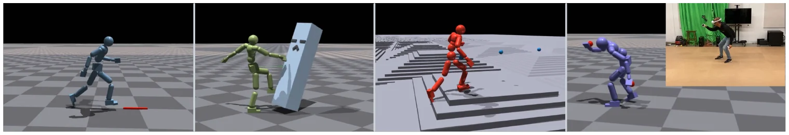
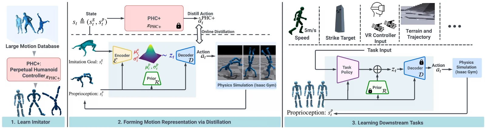
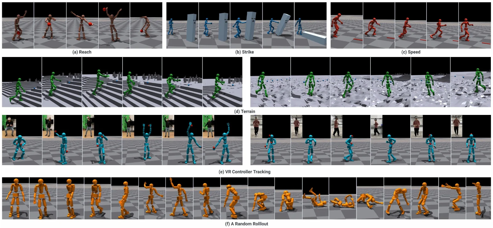
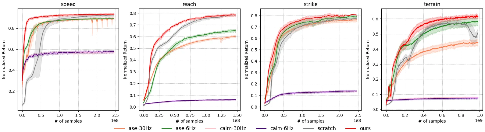
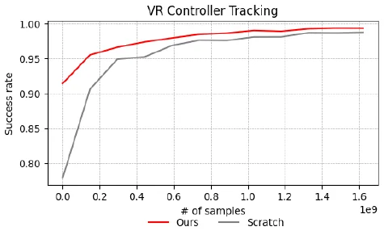
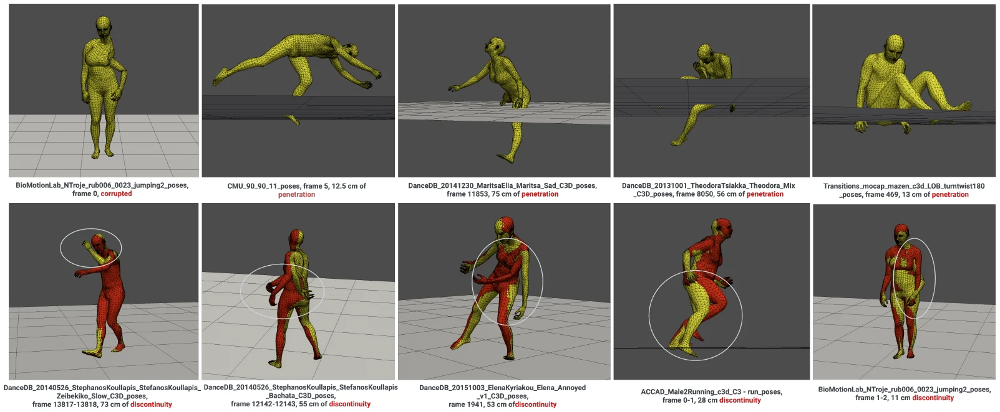

arXiv 2310.04582 · cs.CV · v2 2024 年 4 月 12 日 · ICLR 2024 spotlight · 中文精读
Universal Humanoid Motion Representations for Physics-Based Control
作者 Zhengyi Luo、Jinkun Cao、Josh Merel、Alexander Winkler、Jing Huang、Kris Kitani、Weipeng Xu（Kitani 和 Xu 同等指导），来自 Meta Reality Labs Research 和 CMU。
关于这份精读。这篇论文在 arXiv 上以 CC BY-NC-SA 4.0 发布（署名、非商业、相同方式共享），PDF 页脚只有“Published as a conference paper at ICLR 2024”，没有和这个许可矛盾的字样。我读的是最新的 v2（2024 年 4 月 12 日）。这里按原文顺序覆盖正文六节和附录 A 到 C，小节编号和原文一致，用自己的话整理，不是逐字翻译。公式按原文编号，表格数字照录原文。
图 1 到图 6 从 arXiv PDF 裁切，只做了裁切和格式转换，没有改内容，版权归作者。图下的文字是我写的。按相同方式共享的要求，本页文字和裁切图都按 CC BY-NC-SA 4.0 提供，仅限非商业使用。本页的“读者注”是整理时核算或对照发现的，不属于论文内容，页尾有汇总。
代码。官方代码是 ZhengyiLuo/PULSE。我读的是当时最新的提交 1665985（2025-02-08），只读，没有运行。这个仓库没有许可证文件，GitHub 也识别不出许可；README 只说“请遵守上面几个仓库的许可”（IsaacGymEnvs、PHC、SMPL-X）。没有许可证就默认保留全部权利，所以本页只引用文件名、行号和配置项名称，不搬代码。仓库首个提交在 2024 年 3 月，比论文 v1 晚五个月，后来还加了 PULSE-X，默认配置不一定是论文实验所用。代码和论文不一致的地方两边都写。
物理仿真的人形想复用学过的动作技能，常见做法是学一个潜空间（技能嵌入），下游任务只需要一个高层策略在潜空间里选码，底层解码器把码变成关节动作。问题是覆盖面：以前的潜空间大多从小而专门的数据集学来（走路、拳击、挥剑），换成大而杂的数据集就学不好，于是只能做风格化的生成任务，做不了自由形式的动作跟踪。
PULSE（Physics-based Universal motion Latent SpacE）分三步：先训一个能模仿 AMASS 训练集全部动作的模仿器 PHC+；再用编码器-解码器加变分信息瓶颈，把 PHC+ 的动作在线蒸馏进 32 维潜码，同时学一个只看本体感觉的先验；最后冻结解码器和先验，下游任务的策略输出相对先验均值的残差潜码，用 PPO 训练。
读完我认为最值得记住的三点：消融里影响最大的是“下游从先验均值出发”（去掉后 VR 跟踪成功率从 93.4% 掉到 18.1%）；论文强调“在线”蒸馏，但没有拿离线行为克隆做对照（读者注 5）；附录里几处样本数和代码差 10 倍（读者注 7、16）。

我读了 SuperMimic 的全文。它引用 PULSE 两次（参考文献 [8]）：表 1 的一行，以及 §2“可复用的动作表示与下游控制”里一句话，说 PULSE 和 LATENT 用学到的动作表示做下游强化学习。除此之外没有用 PULSE 的公式、网络或评测协议。所以 SuperMimic 没有从 PULSE 拿具体技术，它把 PULSE 当作“先模仿、再压缩成潜空间、再下游 RL”这条三段式路线的代表，用来和自己“三段联合训练、可蒸馏也可 RL”对比。
SuperMimic 表 1 对 PULSE 的概括是：模仿 PPO / 潜变量 DAgger / 下游 PPO / 任务信号 RL / 不上真机。表注说相邻但不合并的格子表示分阶段训练，后一段训练时冻结前一段。下表是我对照 PULSE 原文和代码逐格核对的结果。
| 格子 | SuperMimic 表 1 | PULSE 原文 | 判断 |
|---|---|---|---|
| 模仿 | PPO | PHC+ 用 PPO 训练（§3、§4.1），奖励里还有 AMP 判别器奖励（式 5） | 准确；略去了 AMP |
| 潜变量 | DAgger | 学生自己采样，老师标注，监督更新；§2 原话说“similar to DAgger”。始终用学生的动作推进，没有 DAgger 原版里按比例混入老师动作的那一步 | 准确（是 DAgger 式在线蒸馏）；表里看不出还同时学了先验 R |
| 下游 | PPO | 算法 1 第 31 行，附录 C.4“All tasks are optimized using PPO”；冻结 D 和 R | 准确 |
| 任务信号 | RL | 速度、伸手、击打、地形用各自的任务奖励；VR 跟踪用的是全身模仿奖励（附录 C.4），也是 RL 奖励，但需要全身参考动作 | 准确；VR 一项的奖励其实是跟踪型的 |
| 真机 | ✗ | 全部在 Isaac Gym 的 SMPL 人形上；真实数据只是 Quest 2 录的 VR 输入 | 准确 |
| 分段冻结 | 三格分开 | PHC+ 训完冻结后蒸馏；D、R 训完冻结后做下游（图 2 图注） | 准确 |
五格都和 PULSE 原文一致，没有错。三处细节表里看不出：模仿阶段的奖励含 AMP（原文式 5，代码 im_z_fit.yaml 和老师配置里 disc_reward_w = 0.5）；潜变量阶段除了蒸馏编码器和解码器，还学了一个只看本体感觉的先验 R，而且这个先验对下游最关键（表 3 R5 对 R6）；VR 下游任务的“RL”信号其实是全身模仿奖励。这些不改变表 1 的分类。SuperMimic 正文那句“PULSE 和 LATENT 用学到的动作表示做下游 RL”也准确。另外我核对了本站 SuperDyno 页表里的 PULSE 一行（99.8 / 39.2 / 35.0 / 3.1 / 5.2 和 97.1 / 54.1 / 43.5 / 7.0 / 10.3），和本文表 1 一致。
下表是我从两篇论文各自读出来的对比，不是 SuperMimic 作者的说法。
| PULSE | SuperMimic | |
|---|---|---|
| 三段怎么训 | 分段：PPO 训老师 → 在线蒸馏 → PPO 训下游 | 联合：世界模型、跟踪器、目标接口一起训 |
| 学习信号 | 老师用无模型 RL；潜空间用监督 | 穿过学到的可微世界模型做 BPTT |
| 表示 | 32 维连续潜码，每帧一个，带可学习先验 | 目标接口编码器，对齐到跟踪器 |
| 下游 | 高层策略输出残差潜码，PPO | 蒸馏或用世界模型做 RL |
| 对象 | SMPL 仿真人形 | Unitree G1 真机 |
| 算力 | 老师约 10¹⁰ 样本，蒸馏约 10⁹，下游每个任务 10⁸ 到 10¹⁰（附录说法，见读者注 16） | 1 张 H100 3 小时 |
PULSE 的老师 PHC+ 就是本站精读过的 PHC 小改版，PULSE 的代码仓库也和 PHC 大量重合（README 原话）。把 PULSE §4.1 和附录 B 对 PHC 的描述，与 PHC 原文和本站 PHC 页对照：
背景。动捕和强化学习让仿真人形能模仿整个数据集、做出漂亮的动画、从稀疏传感器跟踪动作。但每个任务都要重新整理数据、从头训练一个物理策略，奖励、数据或框架哪里出问题都会得到别扭的动作。所以仿真人形虽然物理真实，还没法大规模用起来。
两条复用路线。一条是学潜空间或技能嵌入：先用动作模仿或对抗学习得到一个表示空间和把码翻译成动作的解码器，新任务只训一个输出潜码的高层策略。它的问题是覆盖面：以往都在小而专门的数据上学，只能产生训练数据预设的那几种行为；想扩到 CMU MoCap 也没成功。另一条是把底层做成动作模仿器，高层直接给全身运动学姿态。这在有配对数据的跟踪任务里很常用（监督学习），但生成类任务没有配对数据只能用 RL，而运动学姿态维度高、没有物理约束（根部位置稍改就是一大跳），不适合当 RL 的动作空间，要另加运动学潜空间（MVAE、HuMoR）；和环境交互的任务里，只给运动学信号也不反映交互的动力学。
做法。PULSE 像一个控制领域的基础模型，从简单走路、复杂地形到自由动作跟踪都复用同一个表示。关键是借助最新的动作模仿器（PHC），用变分信息瓶颈把它的技能蒸馏进一个概率潜空间。作者说核心洞见是用预训练模仿器做直接的在线蒸馏，这是能扩到大数据集的关键。再联合学一个只看本体感觉（自身姿态和速度）的先验：从先验随机滚动就能得到多样且稳定的动作，下游探索时采到的是连贯的人类动作而不是关节力矩噪声。
三项贡献。
物理人形的动作潜空间。常用对抗学习或动作跟踪目标来形成可复用的表示。ASE 和 CALM 用判别器或编码器奖励把随机噪声映到真实行为，在小而专门的数据（走路、挥剑）上有效，但覆盖不了更多样的技能。显式的动作跟踪原则上能覆盖数据里的全部技能：ControlVAE、NPMP、PhysicsVAE 和 NCP 都走这条路。NCP 用 RL 在模仿任务里联合学潜空间，ControlVAE 和 PhysicsVAE 额外学一个世界模型。它们在点目标、迷宫、拳击上效果好，但不平地形之类的任务要加适配层。PULSE 也用跟踪来学表示，覆盖 40 小时动捕，并认为关键是从预训练模仿器蒸馏加联合学的先验。
运动学的人体动作潜空间。不经过物理仿真、直接从数据监督学习。有的把多帧压成一个码；MVAE 和 HuMoR 是逐帧自回归的，更适合交互控制。MVAE 主要做走路；HuMoR 在 AMASS 上训练，可以当通用动作先验。PULSE 的形式接近 HuMoR，但多了控制动力学：随机采样时受物理约束，HuMoR 常生成不可能的动作。
物理人形的动作跟踪。从 DeepMimic 开始，RL 跟踪从单片段走到大数据集，用过专家混合、可微仿真、外力等办法。PHC 让单个策略模仿几乎全部 AMASS 并能从摔倒中恢复。本文把 PHC 改到能跟踪全部 AMASS，再把它的技能蒸馏进潜空间。
知识迁移和策略蒸馏。Policy Distillation 用老师收集的经验监督学生；kickstarting 让学生自己收集经验，同时用 RL 和监督训练。PULSE 让学生探索、老师标注收集到的经验，和 DAgger 类似。
符号。全身姿态 \(q_t\triangleq(\theta_t,p_t)\)，含全部 \(J\) 个连杆的 3D 旋转 \(\theta_t\in\mathbb R^{J\times6}\)（6D 旋转表示）和位置 \(p_t\in\mathbb R^{J\times3}\)。速度 \(\dot q_t\triangleq(\omega_t,v_t)\) 含角速度和线速度。帽子表示动捕的真值，不带符号的是仿真值。动捕数据集记作 \(\hat Q\)。“track”“mimic”“imitate”混用。
目标条件 RL。所有任务都是目标条件 RL：策略 \(\pi\) 要模仿参考动作 \(\hat q_{1:T}\)、沿 2D 轨迹 \(\tau_{1:T}\) 走、跟踪 VR 控制器轨迹 \(p^{\rm VR}_{1:T}\) 等。马尔可夫决策过程 \(\mathcal M=\langle\mathcal S,\mathcal A,\mathcal T,\mathcal R,\gamma\rangle\)，仿真决定状态和转移。状态 \(s_t\) 含本体感觉 \(s^{\rm p}_t\triangleq(q_t,\dot q_t)\) 和随任务定义的目标状态 \(s^{\rm g}_t\)，都按人形朝向（偏航角）归一化。奖励 \(r_t=\mathcal R(s^{\rm p}_t,s^{\rm g}_t)\)，用 PPO 最大化 \(\mathbb E[\sum_{t=1}^T\gamma^{t-1}r_t]\)。
人形。按 SMPL 的运动学结构，用平均体形。24 个关节，23 个受驱动，动作 \(a_t\in\mathbb R^{23\times3}\)。每个自由度一个 PD 控制器，动作是 PD 目标。
三步：先学会模仿大规模数据集的全部动作（§4.1）；再用变分信息瓶颈把模仿器的技能蒸馏进潜空间模型（§4.2）；最后把它当下游任务的动作空间（§4.3）。流程见图 2。

沿用 PHC，训练一个能从摔倒中恢复的动作模仿器 \(\pi_{\rm PHC}(a_t|s^{\rm p}_t,s^{\text{g-mimic}}_t)\)。它是逐帧模仿：每一帧的目标状态是本体感觉和下一帧参考姿态 \(\hat q_{t+1}\) 之差，再加参考本身：
PHC 用渐进训练：primitive \(\mathcal P^{(0)}\) 先在整个数据集 \(\hat Q\) 上训练，定期评估成功率；停滞后，它失败的序列组成 \(\hat Q^{(0)}_{\rm hard}\)，新建 \(\mathcal P^{(1)}\) 去学；一直到 \(\hat Q^{(t)}_{\rm hard}\) 学不会或为空。再训一个 primitive \(\mathcal P^{(F)}\) 学失败恢复，最后训练 composer \(\mathcal C\) 在冻结的 primitive 之间动态切换。PHC 在 AMASS 训练集上 98.9%，本文做了“小而关键”的修改，达到 100%，称为 PHC+。
修改一：数据。分析发现训练集里还有严重穿地和不连续的序列，它们因为困难挖掘而对 PHC 造成双重妨碍，去掉后性能提升（附录 B.1）。
修改二：训练日程。PHC 一旦形成 \(\hat Q^{(t)}_{\rm hard}\) 就立刻新建 \(\mathcal P^{(t+1)}\)，\(\mathcal P^{(t)}\) 没有机会用自己的难样本继续提高。PHC+ 先让 \(\mathcal P^{(t)}\) 专注于 \(\hat Q^{(t)}_{\rm hard}\) 再开新 primitive，更充分地利用容量。
修改三：网络。加上一些“现代化”的结构改动（附录 B.3：6 层 MLP、SiLU），只用三个 primitive 就学会了失败恢复并达到 100%。
对照 PHC 页 §3.2，有两点不完全一致。一是“composer 在冻结的 primitive 之间动态切换”：PHC 用的是乘性组合（MCP），所有 primitive 同时起作用，并且 PHC 表 6 专门比过 top-1 的“切换”式 MOE，结论是 MCP 更好；PHC 代码里实际是 \(\sum_i w_i\mu_i\)（PHC 页读者注 11）。PULSE 代码里老师也是这个加权和（humanoid_im_distill.py:194-198）。二是编号：PHC 原文从 \(\mathcal P^{(1)}\) 开始，这里从 \(\mathcal P^{(0)}\) 开始，只是记号。另外目标状态的第四项照抄了 PHC 的 \(\hat\omega_t\)（PHC 页读者注 1 认为应是 \(t+1\)），上式照录。
蒸馏配置 env_im_vae.yaml 加载的老师是 num_prim = 3、has_lateral = False 的 PNN 加一个 composer，和“只用三个 primitive”一致。论文没说恢复 primitive 是不是这三个之一；PHC 原文的 4 个里含 \(\mathcal P^{(F)}\)，按这个类比 PHC+ 可能是 2 个模仿加 1 个恢复，未核实。
“训练中就更新难序列”对应的大概是配置里的 auto_pmcp_soft: True（PHC 页读者注 8说它在训练中调高失败序列的采样权重，README 说 2024 年 2 月才发布）。这是我的推断：论文表 5 只说“训练 primitive 期间是否更新 \(\hat Q_{\rm hard}\)”，没说是重新采样还是换训练集。
PHC+ 用 RL 训好后，通过在线蒸馏学潜表示。结构是编码器-解码器加条件变分信息瓶颈，建模 PHC+ 产生的动作分布 \(P(a_t|s^{\rm p}_t,s^{\text{g-mimic}}_t)\)。它像 VAE，但没有重建损失，直接在动作空间 \(a_t\) 上优化。编码器 \(\mathcal E(z_t|s^{\rm p}_t,s^{\text{g-mimic}}_t)\) 由当前状态算出潜码分布，解码器 \(\mathcal D(a_t|s^{\rm p}_t,z_t)\) 输出动作。借鉴 HuMoR，用一个可学习的条件先验 \(\mathcal R(z_t|s^{\rm p}_t)\) 代替 VAE 的零均值高斯：站着不动和空翻到一半时，动作分布差别很大，先验应该随本体感觉变。编码器和先验都是对角高斯：
训练时从编码器分布采样 \(z_t\)，用解码器算动作。三个网络合起来是学生策略 \(\pi_{\rm PULSE}\triangleq(\mathcal E,\mathcal D,\mathcal R)\)。按证据下界：
数据项像 VAE 的重建项，KL 项让潜码分布靠近可学习的先验。损失：
\(\mathcal L_{\rm KL}\) 就是式 (2) 的 KL 项。作者发现不加约束时，可学习先验会把本体感觉很接近的状态的潜码推得很远，所以加了 \(\mathcal L_{\rm regu}\)，惩罚相邻帧潜码均值的差：时间上相近的转移应该有相近的表示，潜空间更平滑连续。它像 NPMP 用的 AR(1) 先验，是一个弱先验。消融显示它对下游任务很关键，不然潜空间很不连续，RL 探索时难以导航。为了平衡重建误差和 KL，\(\beta\) 逐渐退火。
在线采数据。训练需要 \((s^{\rm p}_t,s^{\text{g-mimic}}_t,a_t,a^{\rm PHC+}_t)\) 四元组：让 \(\pi_{\rm PULSE}\) 在模仿任务里自己跑，再查询 \(\pi_{\rm PHC+}\)。也可以把解码器当成固定对角协方差的高斯，用 RL 目标优化（像 kickstarting），但作者发现潜码采样加 RL 的随机探索会让系统太不稳定。实验里只用 RL 形成不了好的潜空间，RL 加监督的组合得到的潜空间比纯监督更差。和 PHC+ 一样，也做困难负样本挖掘、形成 \(\hat Q_{\rm hard}\) 渐进训练，这还顺带平衡了少见的难序列和简单序列的样本量。评估 \(\pi_{\rm PULSE}\) 时用均值 \(\mu^e_t\)，不采样。
论文只说 E、D、R 都是三层 MLP，潜空间 32 维（§5）。按代码（im_z_fit.yaml、amp_network_z_builder.py:469-520）读出来是：
合计 16,032,269 个，float32 约 61.2 MiB。下游只用 D 和 R（12.4 M）。作为对照，老师 PHC+ 按同样输入算，3 个 6 层 primitive 加 composer 共 34,000,082 个参数，解码器约是老师的 29%。358 和 576 这两个维度沿用 PHC 页读者注 2的算法，PULSE 代码里公式相同。代码还把两个 log 方差夹在 [−5, 2]（use_vae_clamped_prior），论文没提。
代码（amp_agent.py:244-246）在 only_kin_loss 模式下用解码器的均值动作推进仿真，\(z\) 按编码器分布采样；老师的动作只作为标签存起来（humanoid_im_distill.py:204），从不用来推进仿真。这对应 DAgger 里老师动作混合比例一直取 0 的情形。
论文说在线蒸馏是能扩到大数据集的关键，但给出的对照只有两种：只用 RL（附录 C.2 表 6）和 RL 加监督（表 3 R4）。没有离线行为克隆（只在老师的轨迹上回归）的对照，所以“在线”本身比“离线”好多少，论文里没有数据。我在 3D 动画第 4 幕做了一个二维玩具：只在 20 条老师轨迹上回归的学生成功率 84.3%，在线一轮后 99.3%；但给离线 BC 100 条老师轨迹也能到 100%。玩具里的差别来自状态覆盖。这不能说明 PULSE 里的情况，只说明这个问题需要对照实验才能回答。
代码 _optimize_kin（amp_agent.py:775-845）：
torch.norm(pred - gt, dim=-1).mean()，误差向量的 L2 范数取平均，注释写着 RMSE，旁边一行注释掉的才是 MSE。论文写平方。两者在误差为 1 时相等；按范数，误差小时梯度不衰减（梯度大小恒为 1），按平方是 \(2\|e\|\)。附录 C.1 说 \(\beta\) 在 \(2.5\times10^9\) 到 \(5\times10^9\) 样本之间从 0.01 降到 0.001。但表 4 说 PULSE 总共约 \(10^9\) 样本，按这个说法，训练结束时退火还没开始。代码按 epoch 退火（amp_agent.py:828-833）：第 2500 到 5000 个 epoch 线性下降。每个 epoch 是 3072 个环境 × horizon 32 = 98,304 个样本，所以对应 \(2.46\times10^8\) 到 \(4.92\times10^8\) 样本，比附录写的小 10 倍，并且落在总量 \(10^9\) 之内。\(10^9\) 样本约是 10,173 个 epoch。我认为附录 C.1 的数多写了一个数量级。读者注 16 里图 4 的横轴和附录 C.4 的训练量也差 10 倍。
正文和算法 1 只说“从 \(\hat Q\) 采样动作和初始状态”。代码的蒸馏环境是 HumanoidImDistillGetup，配置 env_im_vae.yaml 里 recoveryEpisodeProb = 0.3、fallInitProb = 0.1，即一部分回合从倒地或恢复状态开始。所以学生在蒸馏时也从老师那里学了起身，这能解释图 3(f) 里随机滚动摔倒后能爬起来，以及附录 A 说的“PULSE 基本保留了 PHC+ 的失败恢复能力”。这两个概率的具体含义（按回合还是按环境）我没有逐行读，未核实。
自己画的 · 11 幕 3D 框架动画
框架拆成 11 幕：总览、PHC+ 老师、数据清洗、在线蒸馏（第 4 幕，当场计算的 BC 和 DAgger 玩具）、编码器-先验-解码器、损失和 \(\beta\) 退火、潜码平滑、随机生成、残差动作、下游任务、结果表。可以暂停、拖进度、旋转画面、切换开关。玩具数字是当场算的，标明了哪些是玩具。
\(\pi_{\rm PULSE}\) 收敛后，训练高层策略 \(\pi_{\rm task}(z^{\rm task}_t|s^{\rm p}_t,s^{\rm g}_t)\)。冻结的解码器 \(\mathcal D\) 加上仿真，就是一个新的动力学系统，动作变成 \(z_t\)。每个任务策略是固定对角协方差的高斯 \(\mathcal N(\mu^{\rm task}(s^{\rm p}_t,s^{\rm g}_t),\sigma^{\rm task})\)。论文说从先验采样，策略不用任何对抗目标也能做出像人的行为。完整流程见算法 1。
带可学习先验的分层控制。训练 \(\pi_{\rm task}\) 时，必须从先验诱导的分布里采动作。直观地说，如果潜空间覆盖了很广的技能，随机采的码不一定得到连贯动作；可学习先验提供了一个采样像人行为的好起点。做法是把任务策略的动作写成相对先验均值 \(\mu^p_t\) 的残差：
\(\mu^p_t\) 由先验 \(\mathcal R(z_t|s^{\rm p}_t)\) 算出。RL 探索用固定方差 0.22，而不是 \(\sigma^p_t\)，因为 \(\sigma^p_t\) 往往很小。消融显示不用残差写法会大幅掉点。
代码里任务策略的 sigma_init 是 log 标准差（和 PHC 一样，rl_games 的固定 sigma）。pulse_z_vr.yaml 是 −1.5，\(e^{-1.5}=0.2231\)，正好是 0.22，所以 0.22 是 VR 跟踪的标准差，方差是 0.0498。速度、伸手、击打用的 pulse_z_task.yaml 和地形的 pulse_z_terrain.yaml 是 −1，标准差 \(e^{-1}=0.368\)，方差 0.135。也就是说生成类任务的探索比论文写的大。PHC+ 表 4 的 \(\sigma=0.05\) 同理是标准差（\(e^{-2.9}=0.055\)），和 PHC 页读者注 16一致。残差本身代码里就是 prior_mu + action_z（humanoid_z.py 的 compute_z_actions），和式 (4) 相同。
算法 1：学 PULSE 和下游任务（行号同原文）
任务。生成类：x 方向达到指定速度（0 到 5 m/s）；用右手击打目标（目标初始在 1.5 到 5 m）；用右手够到 3D 点（初始在人形 1 m 内）；在复杂地形（坡、台阶、不平地面、障碍）上沿轨迹走。跟踪类：VR 控制器跟踪，人形要跟住空间里三个 6 自由度刚体（两个手柄和头显）。VR 跟踪可以看成只有部分观测的全身模仿，要求潜空间连续、流式地匹配任意用户输入，所以很难。任务的完整定义见附录 C.4。
数据。PHC+、PULSE 和 VR 策略都用清洗过的 AMASS 训练集。击打和伸手用 AMASS 训练集采初始状态；速度和地形照 PACER 用只含走跑的 AMASS 子集。所有方法用同样的初始状态采样。测试模仿和 VR 跟踪用 AMASS 测试集，以及 QuestSim 用 Quest 2 头显采的真实数据（14 条，16 分钟）。
基线。用官方代码在 AMASS 训练集上从头训练 ASE 和 CALM，约 \(10^9\) 样本，再拿它们的潜空间做下游。两者都用投影到单位球面的 64 维潜码，按设计是 6 Hz 的多帧码；PULSE 是每帧（30 Hz）一个码，所以也比较 30 Hz 版的 ASE 和 CALM。CALM 本来是为按用户指定技能做下游设计的，这里生成任务不针对特定风格，所以去掉风格奖励，只用任务奖励训练 CALM。每个任务还比较一个不用潜空间、不用对抗奖励、从头训练的策略。
指标。生成任务看训练曲线：未折扣回报除以每回合最大可能奖励（归一化回报）。模仿和 VR 跟踪报告全局和根相对的平均关节位置误差 \(E_{\rm g\text-mpjpe}\)、\(E_{\rm mpjpe}\)（mm），以及加速度误差 \(E_{\rm acc}\)（mm/帧²）和速度误差 \(E_{\rm vel}\)（mm/帧）。成功率沿用 PHC：任意时刻关节平均偏离参考超过 0.5 m 就算失败。VR 跟踪的成功率只看三个点，但在 AMASS 上（有全身真值）报告全身误差；真实数据没有全身真值，报告三个控制器的全局位置误差 \(E_{\rm g\text-mhpe}\)（mm）。
实现。仿真用 Isaac Gym，策略 30 Hz，仿真 60 Hz。PHC+ 和所有下游任务的策略或 primitive 是 6 层 MLP。编码器、解码器、先验以及 CALM、ASE 是三层 MLP。潜空间 32 维，约是人形 69 个自由度的一半。
§5 说“PHC+ 和所有下游任务”都是 6 层 MLP。附录 C.4 说生成类任务策略是三层 [2048, 1024, 512]，只有 VR 跟踪是六层 [2048, 1536, 1024, 1024, 512, 512]。代码和附录一致：pulse_z_task.yaml 是 [2048, 1024, 512]，pulse_z_vr.yaml 是六层。地形任务的 pulse_z_terrain.yaml 另有一个 [512, 256] 的分支处理高度图。所以 §5 的说法只对 VR 成立。
表 1 图注和附录 B.1 都说测试集 138 条。表 1、2、3、5、6 里以 AMASS 测试集为分母的成功率一共 19 个（含跨表重复），每一个都能写成 \(k/138\)：例如 97.1 = 134/138（97.10），99.2 = 137/138（99.28），93.4 = 129/138（93.48），60.8 = 84/138（60.87），18.1 = 25/138（18.12）。其中 18 个按截断成立，只有 CALM-6Hz 的 10.9 = 15/138（10.87）要四舍五入，按截断是 10.8。所以分母确实是 138，作者大多是截断到一位小数。
论文只在图 4 说“跑了 3 次”。表格的成功率都在 \(k/138\) 的格子上，说明表格是单次评估（或者多次结果相同）。这和 PHC 页读者注 13的观察一致。
先看 PHC+ 和从它蒸馏出的 PULSE 的模仿质量。表 1 显示经过变分瓶颈后，PULSE 保留了 PHC+ 的大部分技能。这一点很重要：说明学到的潜空间模型（解码器 \(\mathcal D\)）继承了绝大部分技能，能高精度地完成 AMASS 的大多数动作。不加变分瓶颈的蒸馏可以到 100%，性能下降类似于 VAE 的非零重建误差。
表 1 · AMASS 训练集和测试集上的动作模仿（照录原文。* 数据清洗；11313 和 138 条）
| 方法 | AMASS-Train* | AMASS-Test* | ||||||||
|---|---|---|---|---|---|---|---|---|---|---|
| Succ ↑ | Eg-mpjpe ↓ | Empjpe ↓ | Eacc ↓ | Evel ↓ | Succ ↑ | Eg-mpjpe ↓ | Empjpe ↓ | Eacc ↓ | Evel ↓ | |
| PHC | 98.9% | 37.5 | 26.9 | 3.3 | 4.9 | 97.1% | 47.5 | 40.0 | 6.8 | 9.1 |
| PHC+ | 100% | 26.6 | 21.1 | 2.7 | 3.9 | 99.2% | 36.1 | 24.1 | 6.2 | 8.1 |
| PULSE | 99.8% | 39.2 | 35.0 | 3.1 | 5.2 | 97.1% | 54.1 | 43.5 | 7.0 | 10.3 |
训练集五个数（98.9、37.5、26.9、3.3、4.9）和 PHC 原文表 1 的 Ours 完全相同（见 PHC 页表 1）。测试集却不同：PHC 原文 Ours 是 96.4%、47.4、30.9、6.8、9.1（140 条），这里是 97.1%、47.5、40.0、6.8、9.1（138 条）。97.1% 和 40.0 反而更接近 PHC 原文关键点版 Ours-kp 的 97.1%、39.5。测试集换成 138 条后重新评估是可能的解释（训练集的数照搬原文，却没在新训练集上重评，也有点不一致，见读者注 18），但 \(E_{\rm mpjpe}\) 从 30.9 变 40.0 很大，也可能混了关键点版的数。论文没说，我无法判断。
按条数：训练集 99.8% 至多 22 条失败（按截断，\(11313\times0.998=11290.4\)），老师 0 条；测试集 134 条对 137 条，多失败 3 条。误差上：训练集 \(E_{\rm g\text-mpjpe}\) 39.2 对 26.6，大 47%；\(E_{\rm mpjpe}\) 35.0 对 21.1，大 66%；测试集 54.1 对 36.1，大 50%。PULSE 的误差甚至比原版 PHC 还大（39.2 对 37.5、54.1 对 47.5）。所以说成功率基本保住了，精度损失不小。论文 §6 也承认瓶颈是有损压缩。

生成任务。图 4 显示，用 PULSE 做底层控制器在所有生成任务上都超过全部基线，包括两个潜空间模型和从头训练。和 ASE、CALM（各 6 Hz、30 Hz）比，PULSE 一直提供更好的动作空间，归一化回报全面更高。说明 ASE 和 CALM 的做法虽然能从精选数据里学风格，却不能充分捕捉 AMASS 这样大而杂的数据里的技能。总体上 30 Hz 版比 6 Hz 版好，说明需要更细粒度的潜控制；ASE 好于 CALM，部分原因是 CALM 的动作编码器设计，没有风格奖励时下游探索可能受阻。从头训练的归一化回报最接近 PULSE，但动作可能不自然（ASE 的论文和本文的定性结果都观察到）。PULSE 收敛也更快，即使在有训练中没见过的障碍和台阶的地形任务上。观察发现人形在越障时用的是像人的动作，没有任何风格或对抗奖励；快速上台阶时会用到类似跳跃的技能。

VR 控制器跟踪。这个任务可以直接量成功率和关节误差。表 2 报告训练集、测试集和真实数据上的结果。和其他潜空间模型比，PULSE 的跟踪误差大幅下降，验证了它能覆盖很广的人类技能、能做自由形式的跟踪和姿态估计。真实数据上所有序列都能跟住。PULSE 的结果和从头训相当，说明潜空间足够丰富，不妨碍探索。三点跟踪和全身跟踪很接近，预期专门训练的从头策略会更好。用潜空间似乎是在拿精度换成功率，有时为了稳定牺牲精度。图 5 显示用潜空间训练收敛更快。
表 2 · VR 控制器跟踪（照录原文）
| 方法 | AMASS-Train* | AMASS-Test* | 真实数据 | |||||||||||
|---|---|---|---|---|---|---|---|---|---|---|---|---|---|---|
| Succ ↑ | Eg-mpjpe ↓ | Empjpe ↓ | Eacc ↓ | Evel ↓ | Succ ↑ | Eg-mpjpe ↓ | Empjpe ↓ | Eacc ↓ | Evel ↓ | Succ ↑ | Eg-mhpe ↓ | Eacc ↓ | Evel ↓ | |
| ASE-30Hz | 79.8% | 103.0 | 80.8 | 12.2 | 13.6 | 37.6% | 120.5 | 83.0 | 19.5 | 20.9 | 7/14 | 99.0 | 28.2 | 20.3 |
| ASE-6Hz | 74.2% | 113.9 | 84.9 | 81.9 | 57.7 | 33.3% | 136.4 | 98.7 | 117.7 | 80.5 | 4/14 | 114.7 | 115.8 | 72.9 |
| Calm-30Hz | 16.6% | 130.7 | 100.8 | 2.7 | 7.9 | 10.1% | 122.4 | 99.4 | 7.2 | 12.9 | 2/14 | 206.9 | 2.0 | 6.6 |
| Calm-6Hz | 14.6% | 137.6 | 103.2 | 58.9 | 47.7 | 10.9% | 147.6 | 115.9 | 82.5 | 122.3 | 0/14 | – | – | – |
| Scratch | 98.8% | 51.7 | 47.9 | 3.4 | 6.4 | 93.4% | 80.4 | 67.4 | 8.0 | 13.3 | 14/14 | 43.3 | 4.3 | 6.5 |
| Ours | 99.5% | 57.8 | 51.0 | 3.9 | 7.1 | 93.4% | 88.6 | 67.7 | 9.1 | 14.9 | 14/14 | 68.4 | 5.8 | 9.0 |

成功率：训练集 99.5% 对 98.8%（PULSE 多成功约 79 条，按 11313 条算），测试集都是 93.4%（都是 129/138），真实数据都是 14/14。误差全部是从头训更小：训练集 \(E_{\rm g\text-mpjpe}\) 57.8 对 51.7（大 12%），测试集 88.6 对 80.4（大 10%），真实数据的控制器误差 68.4 对 43.3（大 58%），加速度和速度误差也都更大。所以“相当”只对成功率成立。论文说的“拿精度换成功率”在训练集上看得到，测试集成功率并没有更高。PULSE 的优势是图 5 的收敛速度。
附录 C.4 说简单任务（速度、伸手、击打）训练约 \(2\times10^9\) 样本，地形约 \(10^{10}\) 样本收敛。图 4 的横轴：速度和击打到 \(2.5\times10^8\)，伸手 \(1.5\times10^8\)，地形 \(10^9\)。相差约 10 倍。图 5 的 VR 横轴到约 \(1.6\times10^9\)，附录没给 VR 的训练量。这和读者注 7 的 \(\beta\) 退火是同一个倍数，可能是附录统一多写了一个数量级，也可能图 4 只画了训练的前一部分。论文没交代，我无法确定。
动作要看视频，项目主页有大量随机采样和基线对比，图 3(f) 是一个例子。和运动学的 HuMoR 比，PULSE 不常生成不可能的动作；和物理潜空间 ASE、CALM 比，覆盖更广，动作更自然。改变输入噪声的方差可以控制生成，让动作更平缓或更激烈。
用 VR 跟踪任务做消融。作者观察到生成任务受潜空间表达力的影响较小，VR 跟踪受影响大。所有行用同一个老师 PHC+ 训练潜空间，再在冻结的解码器上训 VR 策略。R1 对 R2、R3 对 R6：惩罚相邻潜码大偏差的 \(\mathcal L_{\rm regu}\) 让潜空间更紧凑，下游更容易探索；没有它，编码器会形成不连续的潜空间。R2 对 R6：可学习先验的重要性，没有它下游采样很难。R5 对 R6：式 (4) 的残差动作对探索必不可少，没有它潜空间太难采样（和不加风格奖励的 CALM 问题类似）。R4 对 R6：把 RL 和在线监督蒸馏混在一起有负面作用。
表 3 · 学动作表示的各种策略的消融，VR 跟踪（照录原文。Prior：是否用可学习先验；Prior-action：是否用相对先验的残差动作；Lregu：是否加 Lregu；No RL：训练 PULSE 时是否不用 RL 目标）
| 行 | Prior | Prior-action | Lregu | No RL | Succ ↑ | Eg-mpjpe ↓ | Empjpe ↓ | Eacc ↓ | Evel ↓ |
|---|---|---|---|---|---|---|---|---|---|
| 1 | ✗ | ✗ | ✗ | ✓ | 36.9% | 114.6 | 79.4 | 8.1 | 15.8 |
| 2 | ✗ | ✗ | ✓ | ✓ | 45.6% | 115.0 | 77.2 | 7.5 | 15.0 |
| 3 | ✓ | ✓ | ✗ | ✓ | 60.8% | 106.8 | 72.4 | 9.4 | 16.0 |
| 4 | ✓ | ✓ | ✓ | ✗ | 71.0% | 95.1 | 72.8 | 10.4 | 16.6 |
| 5 | ✓ | ✗ | ✓ | ✓ | 18.1% | 108.6 | 83.8 | 11.2 | 16.4 |
| 6 | ✓ | ✓ | ✓ | ✓ | 93.4% | 88.6 | 67.7 | 9.1 | 14.9 |
正文说“R6 训练一个不用可学习先验、而用 VAE 那样的 \(\mathcal N(0,1)\) 的策略”。但表里 R6 所有项都是 ✓，是完整方法，数字也和表 2 的 Ours 测试集一行完全相同（93.4%、88.6、67.7、9.1、14.9）。不用先验的是 R1 和 R2。所以这句应是指 R1/R2。另外“R2 对 R6”同时改了两列（Prior 和 Prior-action），因为没有先验就谈不上残差，这个对比分不开两者各自的作用；R5 对 R6 才单独测了残差。按条数：R5 是 25/138，R6 是 129/138。R1 到 R2（+8.7 个点）和 R3 到 R6（+32.6 个点）都是加 \(\mathcal L_{\rm regu}\)，后者大得多，说明正则和先验之间有很强的交互。
失败案例。PULSE 证明了通用潜空间可行，但远不完美。第一，模仿成功率没到 100%，说明信息瓶颈是对 PHC+ 技能的有损压缩；不加变分瓶颈的在线蒸馏可以到 100%。变分形式带来概率建模，也带来新的困难。第二，下游任务虽然有像人的行为，但 VR 跟踪这类任务会落后于从头训练。第三，随机生成时人形可能卡在躺着或站着不动的状态，加大噪声可以把它震出来。
结论与未来工作。PULSE 是面向物理人形控制的通用动作表示，可以作为生成任务和估计任务共用的动作先验，不需要额外的修改或适配层。未来方向：学更可解释的表示；加入场景信息和人-物交互；加入有关节的手指。
附录 B 讲 PHC+ 的细节和为模仿大数据集做的修改；附录 C 讲 PULSE 的结构、训练和下游任务配置。作者说代码和模型会开源用于研究。项目主页和补充视频里有：PHC+ 和蒸馏后 PULSE 的模仿与失败恢复（PULSE 基本保留了 PHC+ 的能力）；从先验和解码器的长时间随机生成，可通过输入噪声方差控制行为；和运动学方法 HuMoR 的对比（HuMoR 会生成不自然的动作）；和 ASE、CALM 的对比（PULSE 的随机生成更多样）；以及各下游任务的可视化。
失败分析找出两个主要来源。一是高动态动作，比如侧手翻、连续后空翻。二是常被忽视的数据问题：动捕优化或拟合失败时，序列里有大的不连续和穿地。按 UHC 去掉人-物交互数据后，作者在 PHC 的训练数据里又找到一批有大不连续或穿地的坏序列（图 6）。因为用 DeepMimic 的随机状态初始化，抽到严重穿地的帧时，仿真会施加很大的地面反力，人形会“飞出去”；简单按穿地深度调高序列又会造成漂浮或不连续。有大不连续的帧会导致模仿失败，或者让人形学会预判帧间大跳这样的坏行为。去掉这些序列，得到适合训练和测试的 11313 条训练和 138 条测试序列，作者说会随代码和模型一起发布。

附录 B.1 说在 PHC 的训练数据里“又找到”一批坏序列并删掉，结果是 11313 条训练、138 条测试。但 PHC 原文的训练集本来就是 11313 条，测试集 140 条。测试集少了 2 条，训练集一条没少。要么新删的坏序列只在测试集里（和“在 PHC 的训练数据里找到”矛盾），要么删掉的同时又加回了同样多的序列，要么数字没更新。论文没解释。图 6 的十个例子里只能确定它们来自 AMASS，看不出属于哪个划分。换算图 6 的跳帧：相邻帧差 73 cm 就是 \(0.73\times120=87.6\) m/s，最小的 11 cm 也是 13.2 m/s，远超人体能达到的速度，确实是数据错误。
表 4 · PHC+ 和 PULSE 的超参数（照录原文。\(\sigma\)：策略的固定方差；\(\gamma\)：折扣；\(\epsilon\)：PPO 裁剪范围；\(\alpha\)：\(\mathcal L_{\rm regu}\) 系数；\(\beta\)：\(\mathcal L_{\rm KL}\) 系数）
| 方法 | Batch Size | Learning Rate | \(\sigma\) | \(\gamma\) | \(\epsilon\) | \(w_{\rm jp}\) | \(w_{\rm jr}\) | \(w_{\rm jv}\) | \(w_{\rm j\omega}\) | # of samples |
|---|---|---|---|---|---|---|---|---|---|---|
| PHC+ | 3072 | \(2\times10^{-5}\) | 0.05 | 0.99 | 0.2 | 0.5 | 0.3 | 0.1 | 0.1 | \(\sim10^{10}\) |
| Batch Size | Learning Rate | \(\alpha\) | \(\beta\) | Latent size | # of samples | |||||
| PULSE | 3072 | \(5\times10^{-4}\) | 0.005 | 0.01 → 0.001 | 32 | \(\sim10^{9}\) |
动作、状态和奖励都按 PHC。动作 \(a_t\) 是 69 个执行器的 PD 目标，\(q^d_t=a_t\)，关节力矩 \(\tau^i=k^p\circ(a_t-q_t)-k^d\circ\dot q_t\)，上限 500 N·m。跟踪奖励：
模仿奖励度量人形 23 个刚体的平移、旋转、线速度和角速度差异。\(r^{\rm amp}_t\) 是 AMP 奖励，判别器在 AMASS 上训练。能耗惩罚 \(r^{\rm energy}_t=-0.0005\cdot\sum_{j\in\text{joints}}|\mu_j\omega_j|^2\)，\(\mu_j,\omega_j\) 是关节力矩和角速度，用来防止高频抖动。
式 (5) 和 PHC 原文式 (1)(2) 一字不差，所以 PHC 页指出的代码差异在这里也成立：指数里代码用的是平方误差的平均（PHC 页读者注 3），能耗代码是一次方 \(\sum|\tau\dot q|\)（读者注 4）。这里说“23 个刚体”，SMPL 人形有 24 个刚体，其中 23 个关节受驱动，可能是把两个数混了；代码里奖励对哪些身体求平均，我没有在 PULSE 代码里逐行确认，未核实。
PHC+ 的所有 primitive 和 composer 都是 6 层 MLP，宽度 [2048, 1536, 1024, 1024, 512, 512]，激活函数 SiLU。把 ReLU 换成 SiLU 对跟踪性能有不小的提升；加上网络从 3 层加深到 6 层，只用三个 primitive 就学会失败恢复并达到 100%。为了看新激活函数和新的渐进训练流程的作用，作者只在单个 primitive 上做消融（不是完整的 PHC+），每个训练 \(3\times10^9\) 样本。表 5：R1 对 R3，新的渐进流程大幅提高成功率，说明如果不在每个 primitive 训练期间形成并更新 \(\hat Q_{\rm hard}\)，容量没有用足；R2 对 R3，SiLU 提高了跟踪性能，也改善了 \(E_{\rm mpjpe}\)。
表 5 · PHC+ 单个 primitive 的消融，AMASS-Test（照录原文。Progressive：是否在 primitive 训练期间更新 \(\hat Q_{\rm hard}\)，而不是等它收敛再开新 primitive）
| 行 | Activation | Progressive | Succ ↑ | Eg-mpjpe ↓ | Empjpe ↓ | Eacc ↓ | Evel ↓ |
|---|---|---|---|---|---|---|---|
| R1 | SiLU | ✗ | 92.0% | 43.0 | 29.2 | 6.7 | 8.9 |
| R2 | ReLU | ✓ | 97.8% | 44.4 | 32.8 | 6.9 | 9.1 |
| R3 | SiLU | ✓ | 98.5% | 39.0 | 28.1 | 6.7 | 8.5 |
行号 R1 到 R3 是我按原文讨论的顺序加的。三行分别是 127、135、136 条（共 138 条）。渐进流程（R1 → R3）多成功 9 条，SiLU（R2 → R3）多成功 1 条。所以“SiLU 对跟踪性能有不小的提升”在成功率上只是一条序列，误差上更明显：\(E_{\rm mpjpe}\) 32.8 → 28.1，\(E_{\rm g\text-mpjpe}\) 44.4 → 39.0。单次评估下一条序列的差别是否稳定，表里看不出。另外单个 primitive 已经到 98.5%，比完整 PHC 的测试集成功率（PHC 原文 96.4%）还高，说明三处改动里单 primitive 的部分贡献很大。
\(\pi_{\rm PULSE}\) 的训练流程和 PHC+ 训练 primitive \(\mathcal P^{(0)}\) 相同：训练过程中渐进地形成 \(\hat Q_{\rm hard}\)。\(\pi_{\rm PULSE}\) 和 \(\pi_{\rm PHC+}\) 的状态和动作空间相同，所以训练时可以直接查询老师做在线蒸馏。\(\mathcal L_{\rm KL}\) 的系数 \(\beta\) 在 \(2.5\times10^9\) 到 \(5\times10^9\) 样本之间从 0.01 退火到 0.001，之后不变（这个时间见读者注 7）。超参数见表 4。
主要贡献之一是用在线蒸馏学 \(\pi_{\rm PULSE}\)，潜空间来自老师 PHC+ 的知识。以前的工作（如 MCP）证明过可以不蒸馏、直接用 RL 训练这样的策略，但作者发现变分信息瓶颈加模仿目标会让训练不稳定，猜测是瓶颈的随机采样加 RL 的随机采样带来噪声梯度。表 6：只用 RL 训练超过 \(10^{10}\) 样本，也收敛不到好的模仿策略。
表 6 · 不蒸馏、只用 RL 从头训练 PULSE 的消融（照录原文）
| Distill | AMASS-Train* | AMASS-Test* | ||||||||
|---|---|---|---|---|---|---|---|---|---|---|
| Succ ↑ | Eg-mpjpe ↓ | Empjpe ↓ | Eacc ↓ | Evel ↓ | Succ ↑ | Eg-mpjpe ↓ | Empjpe ↓ | Eacc ↓ | Evel ↓ | |
| ✗ | 72.0% | 76.7 | 52.8 | 3.5 | 8.0 | 32.6% | 98.4 | 79.4 | 9.9 | 16.2 |
| ✓ | 99.8% | 39.2 | 35.0 | 3.1 | 5.2 | 97.1% | 54.1 | 43.5 | 7.0 | 10.3 |
✓ 一行和表 1 的 PULSE 完全相同，是约 \(10^9\) 样本的蒸馏结果；✗ 一行训练了 \(10^{10}\) 样本以上，多 10 倍，测试集只有 45/138。但蒸馏的成本不止 \(10^9\)：它要先有老师 PHC+，表 4 说老师约 \(10^{10}\) 样本。所以公平的总账是“老师 \(10^{10}\) + 蒸馏 \(10^9\)”对“只用 RL \(>10^{10}\)”，蒸馏路线并不更省样本，它的好处是结果好得多。论文没有把老师的样本算进对比，我按表 4 补上。
早期实验试过球面潜空间（像 ASE）和向量量化潜空间（像 NCP）。球面版用同样的编码器-解码器，32 维潜码归一化到单位球面。VQ 版按 VQ-VAE 和离散值神经通信的做法，64 维潜码分成 8 段，字典大小 64；分段让表示能力组合式增长，比加大字典更有效。通过蒸馏，两者模仿都很好（球面 100% 成功、\(E_{\rm g\text-mpjpe}\) 28.1；VQ 99.8%、36.5），但都失去了生成能力：从潜空间随机采样得不到连贯的动作。NCP 需要额外学一个先验。量化潜空间还会因为在离散码之间切换而带来高频抖动，项目主页最后一节有可视化。
球面版 100% / 28.1 和 VQ 版 99.8% / 36.5，全局误差都比 PULSE 的 39.2 小（没说是训练集还是测试集，按 99.8% 和表 1 推测是训练集）。也就是说，单看模仿，变分高斯潜空间是三种里最差的，选它是为了生成和下游，这和 §6 说的“有损压缩”一致。这几个数没有表，只有正文一句。
排版：C.3 里“similar to NCP (?)”是一个没解析的引用，下一句的“NPC”应是 NCP；C.4 地形段“We follow the setup in P”句子不完整（应是 PACER）；图 6 第八张图注写成了“rame 1941”“53 cm ofdiscontinuity”。
生成类任务策略 \(\pi_{\rm task}\) 是三层 MLP [2048, 1024, 512]，VR 跟踪是六层 [2048, 1536, 1024, 1024, 512, 512]，价值函数结构相同。全部用 PPO。简单任务（速度、伸手、击打）训练约 \(2\times10^9\) 样本，复杂地形约 \(10^{10}\) 样本收敛。击打、速度、伸手沿用 ASE 的定义，轨迹跟随沿用 PACER，VR 跟踪沿用 QuestSim。
速度。x 方向目标速度在 0 到 5 m/s 随机采样（AMASS 里跑步的最大速度约 5 m/s）。目标状态 \(s^{\text{g-speed}}_t\triangleq(d_t,v_t)\)，\(d_t\) 是目标方向，\(v_t\) 是要达到的线速度。奖励写作 \(r^{\rm speed}={\rm abs}(v_t-v'_t)\)，\(v'_t\) 是人形根部速度。
击打。没有剑，换成“用手击打”。目标是推倒目标物，右手以外的部位碰到目标就终止。目标状态 \(s^{\text{g-strike}}_t\triangleq(x_t,\dot x_t)\) 含目标物在人形坐标系里的位置、朝向和线速度、角速度。奖励 \(r^{\rm strike}=1-u^{\rm up}\cdot u_t\)，\(u^{\rm up}\) 是全局向上方向，\(u_t\) 是目标的向上方向。
伸手。3D 点 \(c_t\) 在以 (0, 0, 1) 为中心的 2 米见方盒子里采样，目标状态 \(s^{\text{g-reach}}_t\triangleq(c_t)\)，奖励 \(r^{\rm reach}=\exp(-5\|p^{\text{right hand}}_t-c_t\|_2^2)\)。
复杂地形上的轨迹跟随。来自 PACER：控制人形沿随机轨迹穿过台阶、坡、不平地面并避开障碍。策略 \(\pi_{\rm task}(z_t|s^{\rm p}_t,s^{\text{g-terrain}}_t)\)，\(s^{\text{g-terrain}}_t\triangleq(o_t,\tau_{1:T})\)，\(o_t\) 是人形周围的高度图，\(\tau_{t+10}\) 是接下来 10 个时间步的 2D 轨迹。奖励 \(r^{\rm terrain}_t=\exp(-2\|p^{(0)}_t-\tau_t\|^2)-0.0005\cdot\sum_{j}|\mu_j\dot q_j|^2\)，前一项是轨迹跟随，后一项是能耗。轨迹按程序生成，速度 0 到 3 m/s，加速度 0 到 2 m/s²。高度图 \(o_t\in\mathbb R^{32\times32\times3}\)，覆盖以人形为中心 2 m × 2 m 的方块。不考虑体形变化和人与人的交互。和 PACER 不同，这里不需要额外的对抗奖励也能用像人的动作完成任务，作者猜这是因为从预学的先验里采样，像人的技能比不自然的更容易采到。
VR 控制器跟踪。从头显和两个手柄的三个 6 自由度位姿推断全身动作。按 QuestSim 用合成数据训练：把人形的头和手的位置当作头显和手柄的位置。可以看成只跟踪三个关节的模仿任务，目标状态是：
上标 vr 表示只取头和两手三个关节。训练时用同样的（全身）模仿奖励，也用同样的渐进训练流程。
这些都是代码的默认值，论文实验用的配置可能不同，我无法确认。
以下各条都是本页加的核算或对照，不属于论文内容。点编号跳到对应位置。
论文没写、我也没找到的：E、D、R 的宽度（只在代码里）；PHC+ 三个 primitive 里哪个负责恢复；下游任务的并行数和价值函数细节；表格是单次还是多次评估；蒸馏训练用了多少 GPU 时间。
文中提到的数据集、仿真器和方法。除了标注的以外，链接在 2026 年 11 月 9 日用脚本核对都返回 200。
| 名称 | 是什么 | 主页 | 论文 |
|---|---|---|---|
| PULSE | 本文 | 代码（无许可证文件） | 2310.04582 |
| AMASS | 动捕合集，训练和测试 | amass.is.tue.mpg.de | Mahmood 等，ICCV 2019 |
| QuestSim 真实数据 | Quest 2 录的 VR 数据，14 条，评测用 | – | 2209.09391 |
| CMU MoCap | 动捕库，引言提到 | mocap.cs.cmu.edu | – |
| SMPL | 人体模型 | smpl.is.tue.mpg.de | Loper 等，TOG 2015 |
| Isaac Gym | GPU 物理仿真器 | developer.nvidia.com/isaac-gym | 2108.10470 |
| PHC | 老师的前身，本站有精读 | 代码 | 2305.06456 |
| ASE | 对抗技能嵌入，基线 | 代码 | 2205.01906 |
| CALM | 条件对抗潜模型，基线 | 代码 | 2305.02195 |
| HuMoR | 运动学动作先验，先验的灵感 | 代码 | 2105.04668 |
| PACER | 地形轨迹任务的来源 | – | 2304.01893 |
| NPMP | 神经概率运动基元，AR(1) 先验 | – | 1811.11711 |
| ControlVAE | 相关工作，本站有精读 | – | 2210.06063 |
| PhysicsVAE | 相关工作（Won 等，TOG 2022） | – | doi 10.1145/3528223.3530067（脚本访问返回 403，浏览器可开） |
| NCP | 神经类别先验，VQ 潜空间 | – | 2308.07200 |
| MVAE | 运动 VAE | – | 2103.14274 |
| DAgger | 数据集聚合 | – | 1011.0686 |
| Policy Distillation | 策略蒸馏 | – | 1511.06295 |
| Kickstarting | RL 加监督的蒸馏 | – | 1803.03835 |
| PPO | 强化学习算法 | – | 1707.06347 |
| AMP | 对抗动作先验 | – | 2104.02180 |
| MCP | 乘性组合策略 | – | 1905.09808 |
| VQ-VAE | 向量量化 VAE | – | 1711.00937 |
| Latent Space Policies | 把冻结的下层当新环境（§4.3 引用） | – | 1804.02808 |
| IsaacGymEnvs | 代码框架来源 | github.com/NVIDIA-Omniverse/IsaacGymEnvs | – |